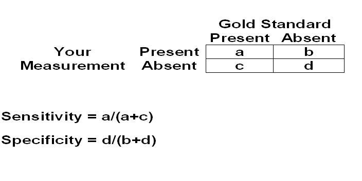

Measurement Validity - Specificity
Lead Author(s):
Jeff Martin, MD
What Is Specificity?
What Is Specificity?

Specificity
is the ability of a measurement to identify correctly those who do
NOT have
the characteristic of interest.